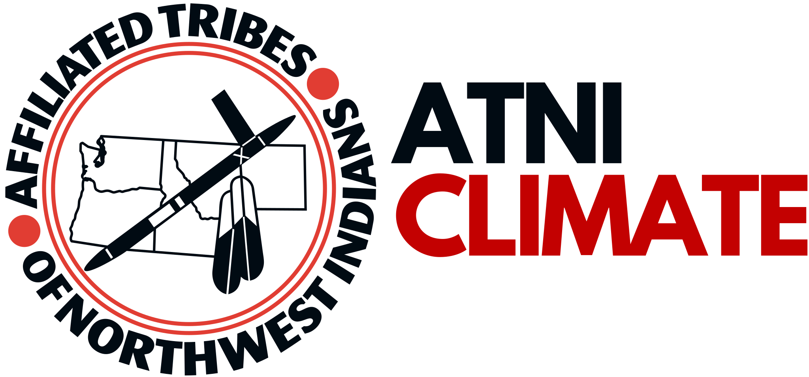

Tribal Energy Feasibility Task Force
Supports member Tribes in assessing energy projects, transmission, and regional markets on their own terms.
Efficiency, solar, and electrification lead 44 Tribes' public plans; no finding concerns offshore wind or marine energy
44 Tribes with at least one type
56 ATNI-listed Tribes covered
22 documents pending text extraction
Built 10/29/2026
A machine-assisted reading of public plans, not a Tribe's own assessment. It endorses no project and ranks no Tribe. A type's absence is not evidence of opposition or disinterest.
No finding after search: 9 Tribes. Documents read showed no energy work the Tribe owns, studies, or plans; absence is not evidence of opposition or disinterest.
No finding yet, documents pending: 2 Tribes. Documents still awaiting text extraction may add evidence.
No document held: 1 Tribe. The library holds no document attributed to this Tribe yet; public discovery may have missed its plans.
Pending text extraction: 22 documents, held by 11 Tribes. A Tribe's entry may change when these documents are read.
Data: energy-potential.json
- Efficiency32 Tribes
- Solar30 Tribes
- Electrification25 Tribes
- Wind11 Tribes
- Battery storage11 Tribes
- Microgrids8 Tribes
- Hydropower7 Tribes
- Biomass6 Tribes
- Geothermal5 Tribes
- Biogas and biofuels2 Tribes
- Hydrogen2 Tribes
- Offshore wind0 Tribes
- Marine0 Tribes
32 Tribes
Energy efficiency and weatherization: 32 Tribes, by the most advanced stage found: 8 installed or operating, 15 planned or funded, 2 assessed or sited, 7 goal or interest. Limit: A machine-assisted reading of public plans, not a Tribe's own assessment; a type's absence is not evidence of a Tribe's opposition or disinterest.
Documents read: 279 documents. Limit: The library holds what public discovery found and could download, so a Tribe's newest plan may be missing.
Findings published: 139 findings. Limit: A second pass checked each finding against its cited excerpts and marked some as needing review; read the cited page before relying on one.
Findings, installed or operating: 29 findings. Limit: A stage describes what the document reports, not what exists today; read the cited page before relying on one.
Findings, planned or funded: 65 findings. Limit: A stage describes what the document reports, not what exists today; read the cited page before relying on one.
Findings, assessed or sited: 19 findings. Limit: A stage describes what the document reports, not what exists today; read the cited page before relying on one.
Findings, goal or interest: 26 findings. Limit: A stage describes what the document reports, not what exists today; read the cited page before relying on one.
First type in the entry, solar: 19 Tribes. Limit: Types are ranked within one Tribe's entry; no Tribe is ranked against another.
First type in the entry, efficiency: 12 Tribes. Limit: Types are ranked within one Tribe's entry; no Tribe is ranked against another.
About this figure
A Tribe counts once per type, at the most advanced stage found, from an entry that lists up to five types. Types are ranked within one Tribe's entry; no Tribe is ranked against another.
Table
| Energy type | Installed or operating | Planned or funded | Assessed or sited | Goal or interest | All | Claim |
|---|---|---|---|---|---|---|
| Efficiency | 8 | 15 | 2 | 7 | 32 | ep-032 |
| Solar | 12 | 11 | 4 | 3 | 30 | ep-021 |
| Electrification | 2 | 22 | 0 | 1 | 25 | ep-033 |
| Wind | 1 | 0 | 9 | 1 | 11 | ep-022 |
| Battery storage | 1 | 6 | 1 | 3 | 11 | ep-030 |
| Microgrids | 0 | 4 | 1 | 3 | 8 | ep-031 |
| Hydropower | 3 | 0 | 2 | 2 | 7 | ep-024 |
| Biomass | 0 | 4 | 0 | 2 | 6 | ep-027 |
| Geothermal | 2 | 1 | 0 | 2 | 5 | ep-026 |
| Biogas and biofuels | 0 | 1 | 0 | 1 | 2 | ep-028 |
| Hydrogen | 0 | 1 | 0 | 1 | 2 | ep-029 |
| Offshore wind | 0 | 0 | 0 | 0 | 0 | ep-023 |
| Marine | 0 | 0 | 0 | 0 | 0 | ep-025 |
- Documents read: 279 documents. Limit: The library holds what public discovery found and could download, so a Tribe's newest plan may be missing.
- Findings published: 139 findings. Limit: A second pass checked each finding against its cited excerpts and marked some as needing review; read the cited page before relying on one.
- Findings, installed or operating: 29 findings. Limit: A stage describes what the document reports, not what exists today; read the cited page before relying on one.
- Findings, planned or funded: 65 findings. Limit: A stage describes what the document reports, not what exists today; read the cited page before relying on one.
- Findings, assessed or sited: 19 findings. Limit: A stage describes what the document reports, not what exists today; read the cited page before relying on one.
- Findings, goal or interest: 26 findings. Limit: A stage describes what the document reports, not what exists today; read the cited page before relying on one.
- First type in the entry, solar: 19 Tribes. Limit: Types are ranked within one Tribe's entry; no Tribe is ranked against another.
- First type in the entry, efficiency: 12 Tribes. Limit: Types are ranked within one Tribe's entry; no Tribe is ranked against another.
4 dated deadlines through 08/31/2028, the first on 11/05/2026; 8 more programs carry no date in the catalog
Dated programs rechecked 11/05/2026; other statuses checked 10/29/2026. Confirm each with the agency. Program facts, not eligibility determinations. Source: energy-funding.json
- In the catalog
- Dated deadlines in the catalog4 programs
- Programs with no date in the catalog8 programs
- Dated deadlines
- BPA Tribal efficiency grantsStatus checked 11/05/2026. Application due date to ensure funding is available; later applications accepted while funds last.11/05/2026
- Tribal HEEHR home rebates (IRA 50122)Status checked 11/05/2026. Tribes must apply to DOE for their formula awards by this date (Program Notice 26-3).12/11/2026
- Grid Resilience formula grants (IIJA 40101(d))Status checked 11/05/2026. FY25-FY26 application deadline, 11:59 pm EST.02/17/2027
- DOE Tribal Energy Financing (loans)Status checked 11/05/2026. DOE's last submission date, not a competitive round deadline.08/31/2028
- No date in the catalog
- DOE Indian Energy technical assistanceStatus open, checked 10/29/2026.No date in the catalog
- Weatherization Assistance ProgramStatus open, checked 10/29/2026.No date in the catalog
- LIHEAPStatus open, checked 10/29/2026.No date in the catalog
- HUD IHBGStatus open, checked 10/29/2026.No date in the catalog
- HUD ICDBGStatus forecasted, checked 10/29/2026.No date in the catalog
- FEMA HMGPStatus open, checked 10/29/2026.No date in the catalog
- USDA Community FacilitiesStatus open, checked 10/29/2026.No date in the catalog
- IRS elective payStatus open, checked 10/29/2026.No date in the catalog
4 programs
Dated deadlines in the catalog: 4 programs. 8 more open or forecasted programs carry no date, and 10 closed programs are not shown. The catalog holds 22 programs: 11 open, 10 closed, and 1 forecasted. Limit: Program facts read on the dates shown, not eligibility determinations; confirm each with the agency before relying on it.
Table
| Program | Deadline | Status | Status checked | Source | Claim |
|---|---|---|---|---|---|
| Dated deadlines in the catalog | 4 programs | ATNI Energy Task Forces, partly verified | ef-005 | ||
| Programs with no date in the catalog | 8 programs | ATNI Energy Task Forces, partly verified | ef-006 | ||
| BPA Tribal efficiency grants | 11/05/2026 | open | 11/05/2026 | Bonneville Power Administration | ef-011 |
| Tribal HEEHR home rebates (IRA 50122) | 12/11/2026 | open | 11/05/2026 | U.S. Department of Energy, Office of Critical Minerals and Energy Innovation | ef-012 |
| Grid Resilience formula grants (IIJA 40101(d)) | 02/17/2027 | open | 11/05/2026 | U.S. Department of Energy, Office of Electricity | ef-013 |
| DOE Tribal Energy Financing (loans) | 08/31/2028 | open | 11/05/2026 | U.S. Department of Energy, Office of Energy Dominance Financing | ef-014 |
| DOE Indian Energy technical assistance | No date in the catalog | open | 10/29/2026 | U.S. Department of Energy, Office of Indian Energy Policy and Programs, partly verified | ef-021 |
| Weatherization Assistance Program | No date in the catalog | open | 10/29/2026 | U.S. Department of Energy, Office of State and Community Energy Programs, partly verified | ef-022 |
| LIHEAP | No date in the catalog | open | 10/29/2026 | U.S. Department of Health and Human Services, Administration for Children and Families, Office of Community Services, partly verified | ef-023 |
| HUD IHBG | No date in the catalog | open | 10/29/2026 | U.S. Department of Housing and Urban Development, Office of Native American Programs, partly verified | ef-024 |
| HUD ICDBG | No date in the catalog | forecasted | 10/29/2026 | U.S. Department of Housing and Urban Development, Office of Native American Programs, partly verified | ef-025 |
| FEMA HMGP | No date in the catalog | open | 10/29/2026 | U.S. Department of Homeland Security, Federal Emergency Management Agency, partly verified | ef-026 |
| USDA Community Facilities | No date in the catalog | open | 10/29/2026 | U.S. Department of Agriculture, Rural Development, partly verified | ef-027 |
| IRS elective pay | No date in the catalog | open | 10/29/2026 | U.S. Department of the Treasury, Internal Revenue Service, partly verified | ef-028 |
Walla Walla County, WA: the May to September daytime high averages about 87 (86 to 90) F in 2040 to 2059, the median of seven models with the lowest and highest in parentheses, against 84 (84 to 86) F in 1995 to 2014. A county mean on a quarter-degree grid. Limit: Model projections, not observations: the median and range of seven of eight planned NASA-downscaled models, on a 0.25-degree grid averaged over the county. Highs ran 1 to 3 F warm against NOAA station normals in two counties. Research data, not siting guidance.
Purpose
Decisions about new energy projects, transmission lines, and a Western electricity market carry consequences for Tribal homelands, waters, and cultural resources. This task force supports member Tribes in assessing those decisions on their own terms, building on the work the Affiliated Tribes of Northwest Indians (ATNI) began on offshore wind.
Feasibility here means more than engineering and cost. The resolutions behind this task force ask whether a project respects Tribal sovereignty, culture, and sacred sites; protects water, fish, lands, and migratory species; and keeps decision-making authority with Tribal governments.
Member Tribes have led on clean energy, and they hold that due diligence comes first. The task force makes that diligence shared work: common research, common questions, and a common voice in the forums where energy decisions are made.
“ATNI member Tribes have demonstrated leadership in clean energy developments and understand the importance of renewable energy and the preservation and restoration of our climate, and the importance of completing the necessary due diligence to ensure preventable harm is avoided.”
What the Task Force Proposes to Do
The task force is forming; its charge, membership, and reporting line are not yet confirmed, and it proposes four kinds of work.
The Tribal Energy Feasibility Task Force is forming. Its charge, membership, and reporting line to the ATNI Energy Committee are not yet confirmed; this section describes what the task force proposes, grounded in the two resolutions behind it. ATNI established the ATNI Energy Program in 1995 so that Tribal rights and interests were represented in power and transmission issues at the Bonneville Power Administration, and the Program supports the policy initiatives of ATNI’s committees, including the Energy Committee, the body through which member Tribes take part.
The starting point is the position member Tribes recorded in May 2024. Resolution #2024-23 (PDF) states that all ATNI member Tribes were “in alignment in opposing the continued development of offshore wind projects at this time.” The phrase “at this time” is the hinge. The resolution did not close the question of renewable energy; in the same text, member Tribes affirm their “leadership in clean energy developments” and “the importance of completing the necessary due diligence to ensure preventable harm is avoided.” What they opposed was development that outran consultation, consent, and the protection of sacred sites, submerged cultural resources, water, fish, lands, and migratory species. The limited-duration task force that resolution created was charged to research, propose policy to the membership, align advocacy, and support each Tribe’s own advocacy.
The Tribal Energy Feasibility Task Force proposes to carry that method into every energy type a Tribe may consider, onshore and offshore, generation and the systems that make generation useful. Feasibility, in this work, means a project that a Tribal government has judged on its own terms: whether it respects sovereignty, culture, and sacred places; whether it protects the relatives that depend on the water and land; whether the Tribe holds decision-making authority over it; and only then whether it pencils out. Resolution #2024-35 (PDF) supplies the second ground. It records that hydroelectric power in the Northwest “severely harmed the cultural resources and well-being of Northwestern Tribes,” and it calls for Tribal electric utilities, Tribal energy development organizations, and Tribal elected leaders to hold “oversight and leadership roles” in a Western Regional Transmission Organization, with “free, prior, and informed consent of transmission planning processes at every level.”
The task force proposes four kinds of work:
- Shared research: Public, sourced compilations on energy technologies, costs, grid and market governance, and funding, written for Tribal leaders and staff and published on this site.
- Common questions: A due-diligence question set a Tribal council can put to any developer, utility, or agency before a feasibility study is funded, drawn from the concerns Resolutions #2024-23 and #2024-35 name.
- Aligned advocacy: Briefings and draft positions for the ATNI Energy Committee and the membership, so that Tribes speaking in regional forums can speak from shared evidence while each Tribe keeps its own position.
- Support for each Tribe’s own path: Tools and data a Tribe can run on its own systems, with its own information, and share only what it chooses to share.
Whether the task force operates as a standing committee workgroup, as a successor to the limited-duration offshore wind task force, or under a new resolution is a decision for the Energy Committee and the membership. This page will record that decision when it is made.
Background
The Offshore Wind Task Force
At the 2024 Midyear Convention, member Tribes established a limited-duration ATNI task force on offshore wind projects.
At the 2024 Midyear Convention in Canyonville, Oregon, member Tribes established a limited-duration ATNI task force on offshore wind projects (Resolution #2024-23). Federal executive actions on climate had accelerated offshore wind development off the Gulf of Maine, the Atlantic, the Gulf of Mexico, and the Pacific. Member Tribes named their concerns plainly: impacts on Tribal communities, culture, heritage, sovereignty, sacred sites, and submerged cultural resources; impacts on water, fish, lands, and migratory species; and permitting schedules that placed heavy administrative and financial burdens on Tribal governments.
The resolution charged the task force to research, propose new policy to the ATNI membership, align advocacy, and support member Tribes in their own advocacy. It records that member Tribes were aligned at that time in opposing continued offshore wind development, and it authorized the ATNI Executive Board to press for a full stop to those efforts, more meaningful consultation with Tribes, and funding for Tribal engagement. That task force is currently dormant. The Tribal Energy Feasibility Task Force carries its lessons into a wider set of energy decisions.
Tribal Leadership in Grid Governance
At the 2024 Annual Convention, member Tribes called for Tribal leadership and oversight in electric grid governance and transmission planning.
At the 2024 Annual Convention in Ridgefield, Washington, member Tribes called for Tribal leadership and oversight in electric grid governance and transmission planning (Resolution #2024-35). The resolution recognizes that hydroelectric power has severely harmed the cultural resources and well-being of Northwest Tribes, and that a Western energy market and an eventual Regional Transmission Organization (RTO) could open the way for more renewable energy while raising questions about where projects are sited and what they affect.
It calls on states, regulators, utilities, and other decision makers to give Tribal electric utilities, Tribal energy development organizations, and Tribal elected leaders oversight and leadership roles in a Western RTO. It calls for free, prior, and informed consent in transmission planning at every level, and it asks the National Congress of American Indians (NCAI) to establish a national Tribal working group on transmission and market governance.
Focus Areas
The focus areas below are proposed. Tribal leaders set them.
Feasibility Across Energy Types
Public cost data are strongest for solar, battery storage, onshore wind, geothermal, and hydropower, and weakest for marine energy and small modular reactors.
Public cost data are strongest for solar, battery storage, onshore wind, geothermal, and hydropower, and weakest for marine energy and small modular reactors, where the public record is mostly estimates (National Laboratory of the Rockies (formerly NREL) Annual Technology Baseline 2025; EIA capital cost study for the Annual Energy Outlook 2025). Cost is not the first question. The task force proposes to hold every technology to the same due-diligence sequence the resolutions describe: cultural and sacred-site review, water and fish, land and migratory species, consent and authority, and then cost, interconnection, and offtake.
A worked Northwest example is the Makah Tribe’s strategic energy plan, prepared with the Pacific Northwest National Laboratory and dated 08/2025, which found that the maximum potential of 4.8 MW of solar in Neah Bay could meet roughly 24 percent of the Tribe’s annual energy demand, while a single small wind turbine could meet roughly 0.5 percent, and named resilience hubs as a priority (PNNL-38051). Each Tribe’s numbers will differ; the method travels.
Grid Governance and Transmission
Resolution #2024-35 asks for Tribal oversight and leadership in a Western Regional Transmission Organization, and for free, prior, and informed consent in transmission planning.
Resolution #2024-35 asks for Tribal oversight and leadership in the formation and governance of a Western Regional Transmission Organization and for free, prior, and informed consent in transmission planning (Resolution #2024-35, PDF). The task force proposes to track where those decisions are being made, who sits at the table, and what a Tribal seat would require. The Bonneville Power Administration’s Tribal Affairs office is one standing venue; its page lists Tribal engagement on grid expansion portfolios (BPA Tribal Affairs). The questions the task force would carry are structural: Who decides where a line goes? Who decides what connects to it? Accountable to whom?
Funding Access
Most federal money for Tribal energy moves by formula, rebate, loan, or tax credit rather than by competitive grant.
Most federal money for Tribal energy moves by formula, rebate, loan, or tax credit rather than by competitive grant, and statuses change within a season. The task force proposes to keep a public catalog of programs with each status read from the agency’s own page on a stated date (see Programs and Tools below). It also proposes to frame the tax questions plainly: Public Law 119-21, enacted in July 2025, changed the clean energy credits, including timelines for wind and solar (H.R. 1, 119th Congress), while the Internal Revenue Service continues to publish elective pay guidance for Indian Tribal governments (IRS elective pay page, Publication 5817-F). How those changes apply to a Tribally owned project is a question for each Tribe’s counsel and tax advisers, not a conclusion this site draws.
Resilience
The Department of Energy’s report to Congress finds that Tribal households carry an energy burden 28 percent above average.
The Department of Energy’s report to Congress on Tribal electricity access finds that Tribal households carry an energy burden 28 percent above average, that an estimated 17,000 Tribal homes have no electricity, and that Tribal communities experience 6.5 times more outages per year than the national average (DOE Tribal Energy Access). In ATNI Tribes’ own public plans, energy efficiency, solar, and home electrification are the types named most often (see the plate above). The task force proposes to treat resilience as the near-term feasibility question: what keeps the lights on at the end of the line, what cuts the bill, and what a Tribe can own outright.
Member Tribes’ own projects
Photographs from member Tribes’ own energy projects will appear here, each with that Nation’s consent. None is placed yet.
Programs and Tools
What Tribal Plans Already Say
ATNI has published a public dataset that reads each ATNI-listed Tribe’s own public planning documents for energy types.
ATNI has published a public dataset that reads each ATNI-listed Tribe’s own public planning documents for the energy types they show real potential for. It is a machine-assisted reading of public plans, not a Tribe’s own assessment, and it endorses no project. What Tribal Plans Say About Energy explains it for Tribal readers, Tribe by Tribe, and the data is open as JSON and CSV.
The first plate on this page holds the counts: energy types against stages, with the documents read and the findings published in its detail, and every figure in its Sources and Table views. No finding concerns offshore wind or marine energy.
These counts reflect which documents the library holds. A type’s absence is not evidence of a Tribe’s opposition or disinterest, and a Tribe can ask ATNI to correct or remove its entry. Each finding cites the document, year, page, and public link, with a short verbatim excerpt.
Funding Catalog
The funding catalog pairs those energy types with federal programs, each status read from its source, and the deadlines plate lists the dates to know.
The funding catalog pairs those energy types with federal programs and the Bonneville Power Administration’s Tribal efficiency grant. Each status was read from the agency page, the Grants.gov record, or the statute on the date shown, and the deadlines plate counts them in its Reading. “Open” for a formula, rebate, loan, or tax program means the program is operating, not that money is waiting. These are program facts, not eligibility determinations; the Tribe decides whether and how to apply, and should confirm with the agency first.
A live scan of Grants.gov on 10/29/2026 found no posted opportunity open to Tribal governments that matched an energy keyword in its title or synopsis; 3 forecasted HUD notices belong to catalog programs. The notice records, checked 11/05/2026, show 2 ICDBG forecasts and 1 IHBG competitive forecast. The absence of a notice is not evidence that funding does not exist. This product uses the Grants.gov API but is not endorsed or certified by the U.S. Department of Health and Human Services.
Siting Tools That Keep Data on Tribal Machines
ATNI-GeoBase is a local-first geospatial desktop application for renewable-energy siting, still in development and not approved for operational use.
ATNI-GeoBase is a local-first geospatial desktop application for renewable-energy siting that ATNI’s Tribal Climate Resilience team is developing. Its published source (github.com/atniclimate/GeoBase, snapshot prepared 09/08/2026) describes deterministic screening with distinct exclusions, constraints, and unknowns, and says that missing coverage remains unavailable. It applies the Tiered Sovereign Data Framework, which ATNI endorsed in Resolution #2026-034 (PDF): unclassified data falls to the most restrictive tier, and a result inherits the tier of its inputs.
The public repository is source only, with no data or installer, under the PolyForm Noncommercial 1.0.0 license; it carries the banner “DEVELOPMENT BUILD - SOVEREIGNTY CONTROLS NOT ENFORCED” and is not approved for operational use. The design point for Tribes is the one that matters: cultural resource layers can stay on a Tribe’s own computer while staff screen a proposal, and releasing any summary to a developer or utility is the Tribe’s decision, not the software’s. It does not estimate energy yield, cost, or grid capacity, and it ranks no sites. Results are screening leads, not feasibility findings.
Technology and Cost References
Two public federal sources anchor the task force’s research on reference costs.
For leaders and staff who want reference costs, two public federal sources anchor the task force’s research: the National Laboratory of the Rockies (formerly NREL) Annual Technology Baseline 2025 (2023 dollars) and the EIA capital cost study for the Annual Energy Outlook 2025. Both report overnight capital costs before interest and incentives, and both predate recent tariff and supply-chain changes. Siting, interconnection, and remote-community conditions move these figures a long way, which is why the task force treats access and capital structure, not technology, as the usual binding constraints for Northwest Tribes. A fuller technology and economics note will be added to the library once its figures are checked against the original tables.


Policy Sentinel
ATNI Climate builds Policy Sentinel, the policy search tool behind this task force’s saved searches and follow list.
Policy Sentinel is the policy search tool that ATNI Climate builds for Tribal governments. The saved searches and the follow list under Policy Watch open in it, and it keeps a followed list in the reader’s own browser.
Policy Watch
Saved searches of federal and state sources follow the decisions in front of this task force, and a follow list names the dockets, rules, and bills to watch. Each search links to the official source and to Policy Sentinel, the policy search tool that ATNI Climate builds for Tribal governments. Counts were checked 10/29/2026.
Saved Searches
Each saved search links to the official source and to Policy Sentinel.
The saved searches are listed in policy-watch.json; this page shows them when JavaScript is available.
Follow List
The dockets, rules, and bills this task force follows.
The follow list is in policy-watch.json.
Import the Follow List into Policy Sentinel
Download the list and load it into Policy Sentinel, which keeps it in that browser.
- Download the importable follow list for this task force (JSON). It holds the dockets and Regulation Identifier Numbers that Policy Sentinel can follow; the documents and bills above are for reading.
- Open Policy Sentinel and go to its Following section.
- Choose “Import followed list” and select the downloaded file.
- Press “Check for new” to look up each item.
Policy Sentinel keeps the list in that browser and sends nothing until “Check for new” is pressed. The lists for the other task forces: Data Centers and Artificial Intelligence.
Status
Prefill is coming. Policy Sentinel opens with an empty search for now.
Once it adds prefill, the same “Open in Policy Sentinel” links will open each search already filled in.
Get Involved
Tribal leaders and Tribal staff take part through the ATNI Energy Committee. To join the work or share a public resource, contact ATNI through its website.